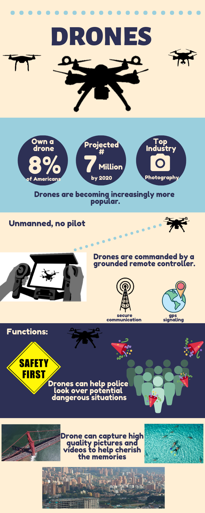
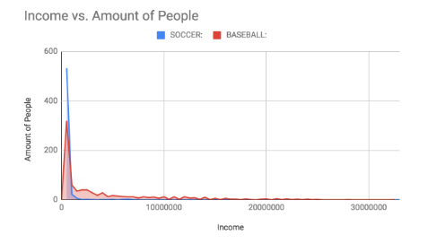

My Projects
Over the course of the AP Computer Science class, we have worked on different projects.
After practicing and trying to perfect different skills, we would share our creations and make them public for everyone to see.
Some of my projects and creations are showed below.
Mission for Sports Scholarship
link to the video if your browser does not support HTML5.
For this project, we were given the task to create a storyboard or game. My partner, Yasmin Corel, and I
decided to create a storyboard/choose-your-own adventure game. The storyline of the game is about
two characters named Ron Stoppable and Kim Possible (from the hit 2000s disney channel show Kim Possible)
who have to attend a regular day of highschool. The goal of the game is to help your character obtain a sports scholarship.
The user is given many different options to help their character achieve the goal.The process of creating
this game was split into small tasks so it was easier to complete the whole game and find the little bugs and glitches earlier.
The game’s programming consists of many broadcast signals that would trigger decisions markers to disappear
or appear, as well as, make the birds talk and have different dialogues. We also nested several
if-then statements, which was a main portion in making the game functioning. The skills that I have learned and
practiced through the creation of the game allow me to understand the behind the scenes of games and animations.
Also, these new skills allow me to understand coding and algorthims which are the basics of computer science.
CLICK THE KIMMUNICATOR PHONE DOWN BELOW TO PLAY THE GAME!

Activity Generator
The task in this assignment was to create an app create an app that addresses a personal, practical, or societal issue.
For this project, Alexia Montenegro -my partner- and I created an interactive random generator app. If a person is
unoccupied and needs something to do, this app would be perfect for them. Activity Generator helps people pick/ gives them
ideas of what they can do. The app's programming contained many lists, which are abstractions that reduce the complexity
of the code in order to run efficiently. The app contains categories of activities that the user can choose
from to help personalize the activity to them. Some new skills that i have learned are how to strategize to create a new app, how getting
bugs on the app is aprt of the process, and how abstractions work to make the code less complex. This app is
only available on Android devices, but your boredness will definitely be satisfied.
Click the machine icon to download its Android Package Kit

Geometry Calculator
My partner, Antonio Martinez, and I created a code on python that allows the user to find the
geometric calculations for volume, area, and perimeter. This allows users to calculate the value
needed without memorizing the formula as the calculator will compute it all for you.
The code contains controlled structures such as if-elif-else statements and even while statements. The
code also contains many different functions that are called on depending on the user's input.
If you have any geometric calculation needs, specifically for volume, area, and perimeter,
you would definetly enjoy this code.
Click the calculator below for your geometry needs.
Big Data Computational Innovation
 In this task, we were asked to identify a computational innovation in the world. I chose drones.
Through this infographic, you can learn how a drone works, facts about drones, and even
the positive and negative effects the drone poses on society, the economy, and culture.
The infographic was created through the website canva.com. Canvan allowed me - a person
with no graphic-design background - to easily create a design with the information
and research that i discovered.
To check out Canva.com click on the paint brush below and
To check out my documentation click on the pencil picture.
Vulnerable User: Malware
During this project, my class first learned how there are many different kinds of
cyber attacks that occur over the internet. Attackers try to control all the information
possible on a person's computer. To do this, they use malware. During this activity,
I learned that there many different kinds of malware that attackers use. They
all however, just try to take advantage of the user and their information. In this project, I learned
that all computers have a weakness or vulnerability that can be exploited by
someone who would like to have access to unauthorized actions in a system.
The presentation in the link below is on the malware the conficker.
To learn more about the conficker, Click the picture below to go to my powerpoint presentation.
Modifying a Simulation
Model simulations allow real world problems to be simulated and studied inorder to be
provided the potential behavior of the issue. In this task, my partner, Jason P., and I, selected
the simulation "rabbits grass weeds" because the field of ecology was an intrest to us both.
We wanted to see how certain populations fluctuate from increasing to decreasing due to
specific circumstances. I learned how to add new variables and code it into the simulation.
The code for the simulation was actually worded much differently than what I have seen
before, but with the help of my partner, we reviewed some of the original code and began to
understand it more. We then added new circumstances and variables.One of the new added
variables (predator-fox) allowed the predictive power of the simulation to increase and
become more realistic. Now, it would more accurately represent the environment and how
wild life is much more complex than what can be seen.
To download the simulation for netlogo click the picture below.
Investigate with Data
My partner for this project was Yasmin Corel and when choosing the field of data for the topic of
sports, we thought that how many injuries, most watched sport, and the income in a specific sport
were the most obtainable pieces of data we could find online. After careful deliberation and
connecting the possible fields of data the questions were created. The question that was most
interesting was ‘Does the most watched sport receive the most income?’ This question began our
search for data because money, through it can not buy happiness, is an important part of our
everyday lives and sports are the first kind of entertainment that appeal to a wide age range of
individuals. Together, the question for the data was formed. In this project, I learned how to sort
through data for what we needed, how to analyze the data in comparison to one another, and how
to create a visual to show my results. One of the most important things I learned in the process of
making this visual(shown above), is that income data is skewed and instead of using the average to
compare the sets of data, I should use the median since the median isnt affected by the extreme values.
Check out my data and documentation by clicking the picture below
Create Performance Task
download the app (App's Android Package Kit)
This project was actually submitted as apart of my AP portfolio. For this project, I worked
independently as I created the app Life Plan (also known as Get My Life Togther). This app
was created on MIT App Inventor and is intended to allow the user to have a weekly agenda,
checklist, and even a motivational quote generator. The app's programming contained lists, if-then
logic statements, and mathmatical statements too. In this project, I learned how to utilize the
procedures that I created. These abstactions allowed me to use the code multiple times without
having to repeat the code over and over again. Once again, I also learned that bugs and having a
difficult time with the code is apart of the creating process, but I tried my best to make everything
work out in the end. The app is only available on android devices,
but if you would like to see my documentation, click the phone below.

Explore Create Task
This performance task was also submitted as apart of my AP portfolio. The artifact and research I
independently conducted was on the computational innovation- Ring doorbell. I choose this
innovation because I see them being installed on more and more homes and has become extremely
relevant today. I created this artifact on Canva.com. Each picture has the intention of demonstrating
the purpose and function of the doorbell. Ring Doorbell allows the home owner/app user to see
who is at the door even if they arent home. I learned that every innovation has countless effects- some
positive, some negative. Either way, the innovation not only has an impact on society,
but also on the economy and even culture.
To learn more about Ring Doorbell, read my documentation when you click the door below.